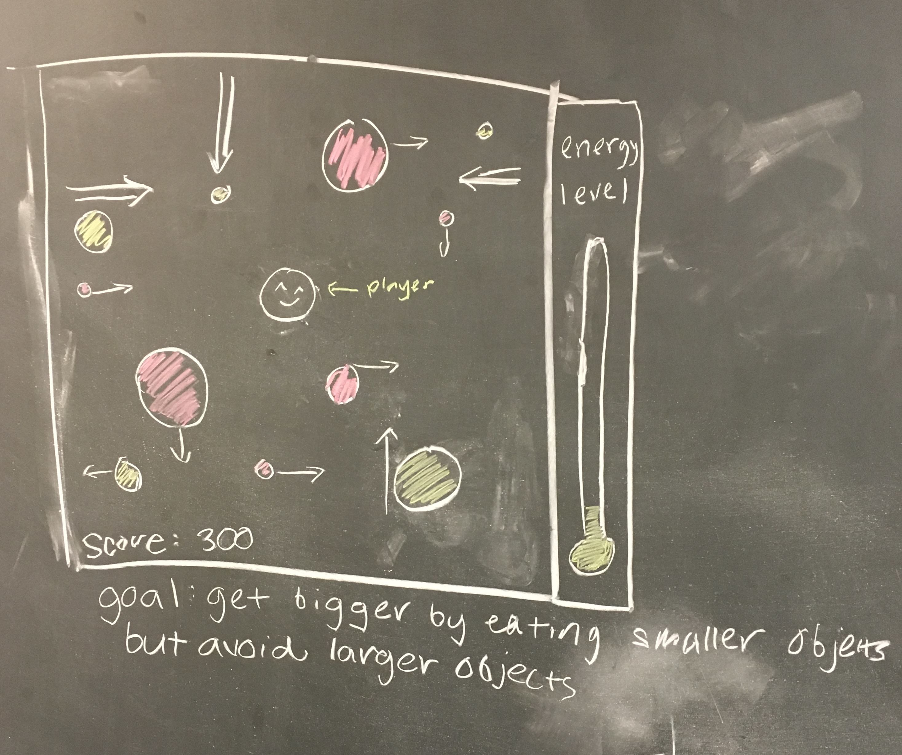

Player moves around in the canvas to eat blobs smaller than itself and avoid bigger blobs. The blobs will be coming from all 4 directions and move either horizontally or diagonally. The level of difficulty will determine the maximum speed of the blobs. The player increases in energy level when it eats a blob and increases in size so that it can eat bigger blobs.
We were inspired by agar.io where you collect blobs and grow larger while simultaneously avoiding other larger players who will try to eat you. Also games are fun to make :)
